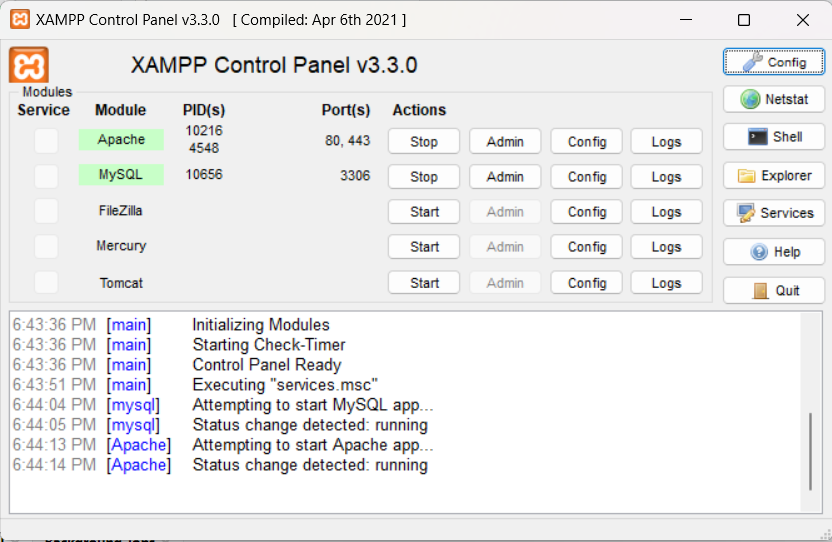
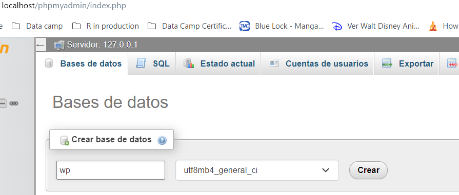
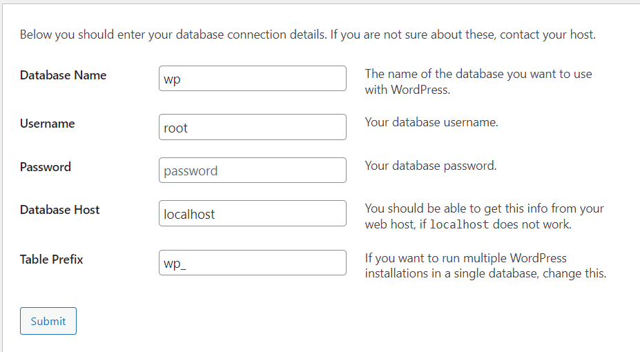
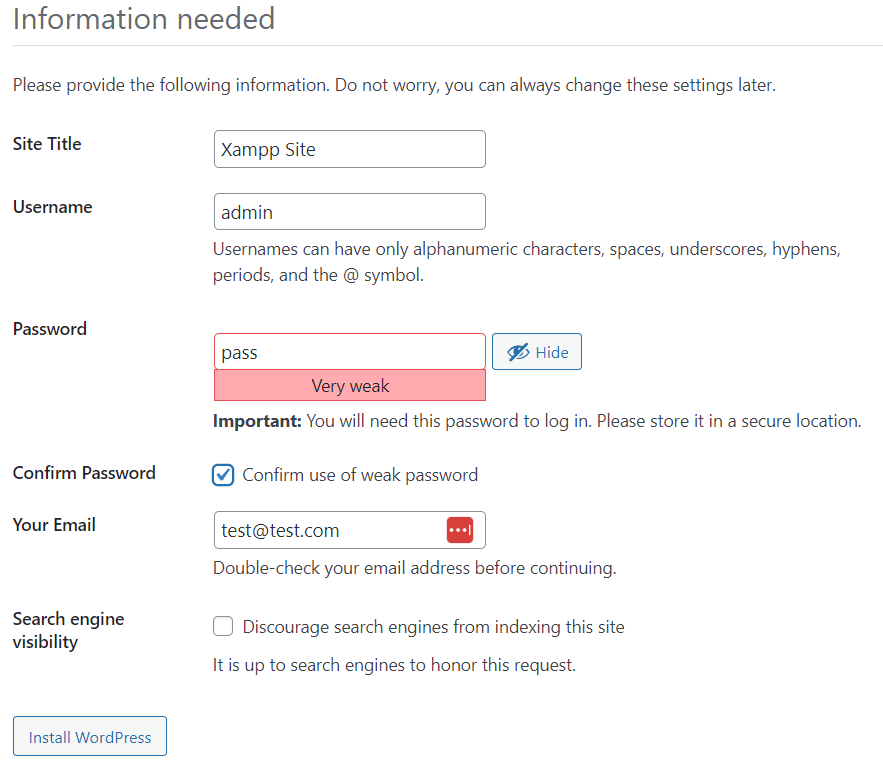
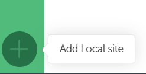
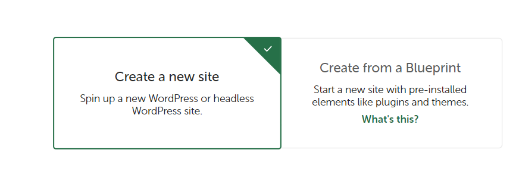
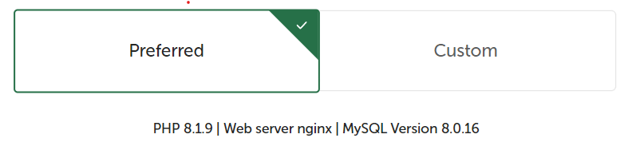
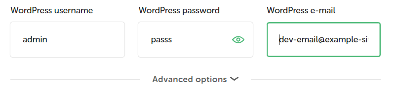
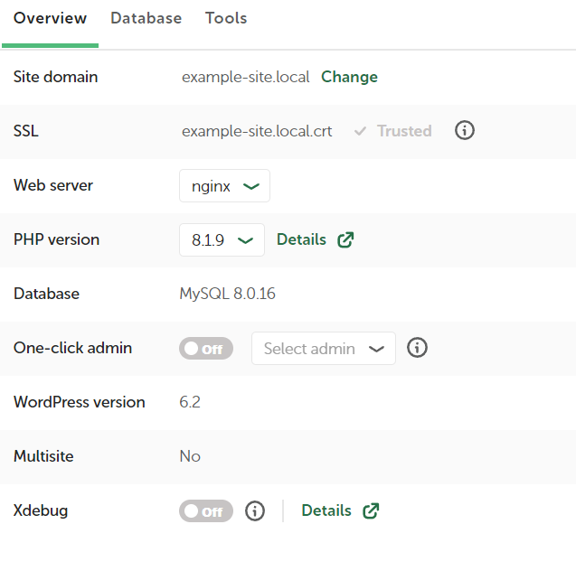

1 Setting working environment
1.1 Setting XAMPP
It is a working environment created for PHP with an Apache web server and Mysql or Mariadb database. It’s perfect if you are a web developer who works in more projects independent to WordPress. To configure this possibility follow the next steps:
Download and install Xampp
Download and unzip WordPress
Copy the WordPress folder to: “C:\xampp\htdocs”
Open Xampp and run Apache and Mysql 
Go the Xampp administrator and create an empty database named for example “wp”. 
Go to WordPress folder to start the installation.
Fill the configuration form as you can see bellow. 
Fill correctly your credintials. 
1.2 Setting Local Wp
This environment it’s design to work with WordPress and offer the next advantages:
- Can change easily between PHP versions.
- Has Add-ons to add new functionalities like (Link Checker, Image Optimizer, Cloud Backups, Instant Reload and TablePlus)
- Can create local security certificates (SSL)
- Mailhog to manage emails.
- Livelink to share the local website with others.
- Blueprints to duplicate projects.
To create our local site we need to follow the next steps:
Download and install Local
Click over the “Add Local site” in the bottom left of the program. 
Define if you create a web from the scratch or from a blueprint. 
Define your internal name and folder to host our site.
Define your PHP version, web version and data base version. 
Define your WordPress credentials 
On the overview page you can click TRUST to create a SSL over the local site. 